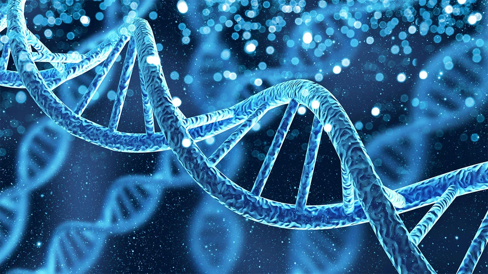
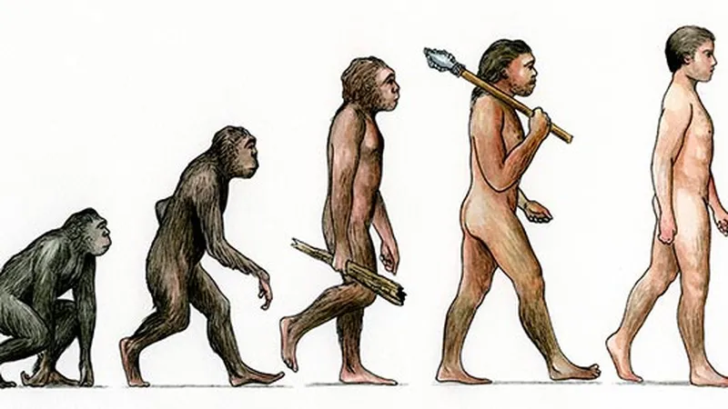
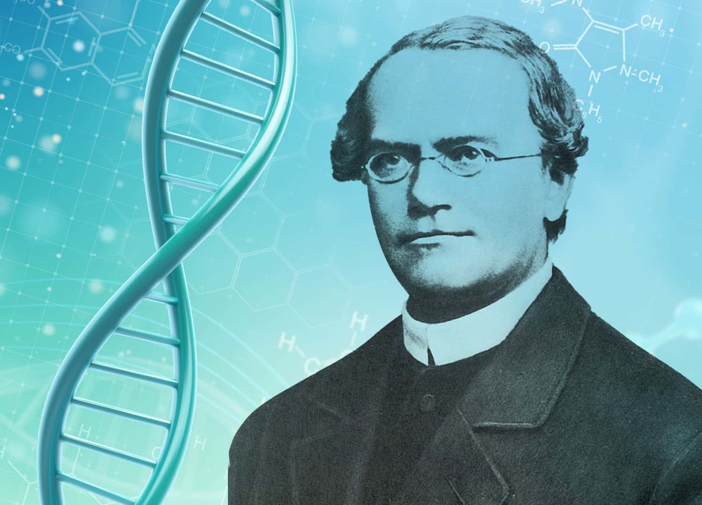
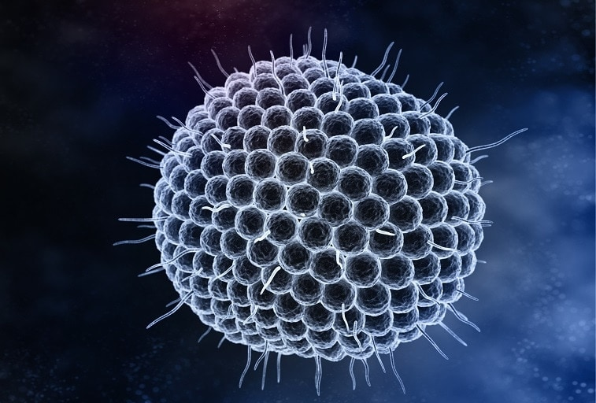

What is biology?
Biology is the branch of science that explores life in all its forms, from the smallest microorganisms to the largest animals and plants. It examines the structure, function, growth, and evolution of living organisms, as well as their interactions with each other and their environments. For instance, biologists study how cells function and how genetic information is passed from one generation to the next. They also explore ecosystems to understand how different species interact within their habitats. An example is the study of how bees pollinate flowers, which is crucial for understanding plant reproduction and the production of many of the foods we consume.
Biology has a profound impact on various aspects of our lives and the world around us. It plays a critical role in medicine, helping to develop treatments and vaccines for diseases. For example, the study of the human immune system has led to the development of vaccines for illnesses such as measles and COVID-19. In agriculture, biological research improves crop yields and pest resistance, ensuring food security.
Why is it essential to learn Biology?
Understanding biology is crucial for addressing various challenges and improving quality of life in numerous ways. Firstly, biology is fundamental to medical science, which directly impacts human health and well-being. By studying biological processes and understanding how diseases affect the body, researchers and healthcare professionals can develop effective treatments, vaccines, and diagnostic tools. For instance, the development of vaccines against diseases like measles and COVID-19 relies on a deep understanding of human biology and immunology. This knowledge not only helps in treating existing health conditions but also plays a pivotal role in preventing outbreaks and managing public health crises.
Secondly, biology is vital for advancements in agriculture and food security. With the growing global population and changing climate conditions, it is essential to develop crops that are more resistant to pests, diseases, and environmental stresses. Biologists work on genetically modifying crops to enhance their yield, nutritional value, and resilience. For example, genetically engineered crops like Bt cotton have been developed to resist insect pests, reducing the need for chemical pesticides and improving crop productivity. This contributes to a more sustainable food supply and helps to ensure that people have access to nutritious food.
Thirdly, biology plays a crucial role in environmental conservation and the protection of biodiversity. Understanding ecosystems, species interactions, and the effects of human activity on natural habitats enables scientists and conservationists to develop strategies to preserve endangered species and restore damaged environments. For instance, biologists studying coral reefs are working to understand the impacts of climate change and pollution on these vital ecosystems. Their research helps in designing conservation efforts to protect coral reefs and the diverse marine life they support, which is essential for maintaining the health of our planet's oceans.
Lastly, biology informs the development of innovative technologies and applications in various fields, including biotechnology and environmental science. Advances in genetic engineering, synthetic biology, and bioinformatics have led to breakthroughs in medicine, agriculture, and industrial processes. For example, the use of CRISPR technology for genome editing has opened up new possibilities for treating genetic disorders and developing disease-resistant crops. By exploring and applying biological principles, scientists and engineers can create solutions that address complex problems and drive technological progress, ultimately benefiting society as a whole.
Main Concepts
Cell Theory
Biology, the study of life and living organisms, encompasses a wide range of concepts that are fundamental to understanding the natural world. One of the central concepts in biology is cell theory. This theory posits that all living organisms are composed of cells, which are the basic units of life. It also asserts that all cells arise from pre-existing cells and that the cell is the fundamental unit of structure and function in living organisms. This concept is pivotal because it underpins much of modern biology, including our understanding of how organisms grow, develop, and function at a cellular level. The discovery of cells and their roles in various biological processes has been instrumental in advancing fields like genetics, medicine, and biotechnology.
Genetics
Another core concept is genetics, which involves the study of heredity and variation in organisms. Genetics explores how traits are passed from one generation to the next through genes, the units of heredity found in DNA. This field has revealed the mechanisms of inheritance, gene expression, and genetic variation, providing insights into how traits are inherited and how genetic disorders arise. The principles of genetics are crucial for understanding evolution, as they explain how genetic variations contribute to the adaptation and survival of species. Modern genetics has also led to significant advancements in medical research, including the development of gene therapies and personalized medicine.
Evolution
Evolution is another foundational concept in biology, explaining the diversity of life on Earth. Evolutionary theory, primarily associated with Charles Darwin, proposes that all species of organisms have descended from common ancestors through a process of natural selection. This concept helps explain the adaptation of organisms to their environments and the emergence of new species over time. Evolution provides a framework for understanding the relationships between different organisms, the development of complex traits, and the mechanisms driving biodiversity. It also underscores the interconnectedness of life and the dynamic nature of biological change.
Ecology
Ecology is a key concept focusing on the interactions between organisms and their environments. This field studies how organisms interact with each other and with their physical surroundings, including factors such as climate, soil, and water. Ecology examines ecosystems, communities, populations, and individual organisms, exploring topics such as energy flow, nutrient cycling, and species interactions. Understanding ecological principles is essential for addressing environmental challenges such as habitat loss, climate change, and conservation. Ecological research informs efforts to manage natural resources sustainably and protect biodiversity.
Homeostasis
Lastly, homeostasis refers to the processes by which living organisms maintain stable internal conditions despite external changes. Homeostasis involves various physiological mechanisms that regulate factors such as temperature, pH, and the concentration of ions and nutrients within cells and organisms. This concept is critical for understanding how organisms survive and function optimally in varying environmental conditions. Homeostatic processes ensure that internal environments remain within a range that supports life, enabling organisms to adapt to changes and maintain their health and functionality.
Research and Studies
Discovery of the Structure of DNA
One of the most groundbreaking studies in the history of biology was the discovery of the structure of DNA by James Watson and Francis Crick in 1953. This pivotal research elucidated the double-helix structure of DNA, the molecule responsible for storing genetic information in living organisms. The discovery was based on the X-ray diffraction images produced by Rosalind Franklin, which provided crucial insights into the DNA structure. Watson and Crick’s model of DNA revealed how genetic information is encoded, replicated, and transmitted from one generation to the next. This breakthrough laid the foundation for modern genetics, revolutionizing our understanding of heredity, gene function, and molecular biology. It has had profound implications for fields such as genetic engineering, genomics, and medicine, enabling advances in areas like gene therapy, forensic science, and the Human Genome Project.
Charles Darwin’s Theory of Evolution by Natural Selection
Charles Darwin's formulation of the theory of evolution by natural selection, presented in his 1859 work "On the Origin of Species," marked a major shift in biological sciences. Darwin proposed that species evolve over time through the process of natural selection, where organisms with traits better suited to their environments are more likely to survive and reproduce. This theory provided a unifying explanation for the diversity of life on Earth, linking observations from paleontology, biogeography, and embryology. Darwin’s work established the concept of common descent, suggesting that all life forms are related through a shared ancestry. His theory not only revolutionized our understanding of biological diversity but also laid the groundwork for evolutionary biology, influencing subsequent research on adaptation, speciation, and the mechanisms of evolution.
Gregor Mendel’s Laws of Inheritance
In the mid-19th century, Gregor Mendel conducted experiments with pea plants that led to the formulation of the fundamental laws of inheritance. Mendel’s work, published in 1866, established the principles of segregation and independent assortment, which describe how traits are inherited from one generation to the next. By analyzing the patterns of inheritance of specific traits, such as flower color and seed shape, Mendel was able to deduce that traits are controlled by discrete units, now known as genes. His findings laid the foundation for the field of genetics and the understanding of hereditary patterns. Although his work was not widely recognized during his lifetime, Mendel’s principles later became fundamental to modern genetics, influencing our understanding of gene function, genetic disorders, and evolutionary processes.
Louis Pasteur’s Germ Theory of Disease
In the late 19th century, Louis Pasteur’s development of the germ theory of disease fundamentally transformed the field of microbiology and medicine. Pasteur’s experiments demonstrated that microorganisms are responsible for causing many diseases, challenging the previously held belief in spontaneous generation. His research led to the development of pasteurization, a process that kills harmful microorganisms in food and beverages, and contributed to the establishment of sterile techniques in surgery. Pasteur’s work not only advanced the understanding of infectious diseases but also led to the development of vaccines for diseases such as rabies and anthrax. His contributions laid the groundwork for modern microbiology, immunology, and public health, significantly reducing the incidence of infectious diseases and improving overall health outcomes.
Facts about Biology
The human body is home to trillions of microorganisms, including bacteria, viruses, fungi, and protozoa, collectively known as the microbiome. These microbes outnumber human cells and play crucial roles in various bodily functions, such as digestion, immunity, and even mood regulation. Research into the human microbiome has revealed its importance in maintaining health and its involvement in conditions like obesity, diabetes, and autoimmune diseases. The microbiome’s complexity and its interactions with human health underscore the profound influence that these microscopic organisms have on our overall well-being.
While most people are aware that plants perform photosynthesis, few realize the intricacy and significance of this process. Photosynthesis is the method by which plants, algae, and some bacteria convert sunlight into chemical energy, producing oxygen as a byproduct. This process not only sustains plant life but is also fundamental to life on Earth, as it provides the oxygen we breathe and forms the basis of the food chain. Additionally, photosynthesis plays a key role in regulating atmospheric carbon dioxide levels, helping to mitigate climate change.
Epigenetics is a field that studies how environmental factors and lifestyle choices can influence gene expression without altering the DNA sequence itself. Epigenetic modifications can turn genes on or off, affecting an organism’s traits and potentially being passed on to future generations. This means that experiences such as diet, stress, and exposure to toxins can impact gene activity and contribute to diseases. Understanding epigenetics provides insights into how genetic predispositions can be modified by environmental factors, opening up new possibilities for personalized medicine and preventive health strategies.
Tardigrades, also known as water bears, are microscopic organisms renowned for their incredible resilience. They can survive extreme conditions that would be lethal to most other forms of life, including high levels of radiation, intense temperatures, and even the vacuum of space. Tardigrades achieve this by entering a state called cryptobiosis, where they dry out and suspend their metabolic processes, allowing them to endure harsh environments. Their adaptability makes them a subject of interest for researchers studying the limits of life and the possibilities of life beyond Earth.
While DNA is often regarded as the central player in genetics, RNA also plays a crucial role in regulating gene expression. Beyond its function as a messenger between DNA and protein synthesis, RNA molecules can influence gene activity through processes like RNA interference (RNAi). RNAi involves small RNA molecules that can silence specific genes, thereby regulating the production of proteins and impacting cellular functions. This discovery has significant implications for understanding genetic regulation and developing therapeutic strategies for diseases caused by gene dysregulation.